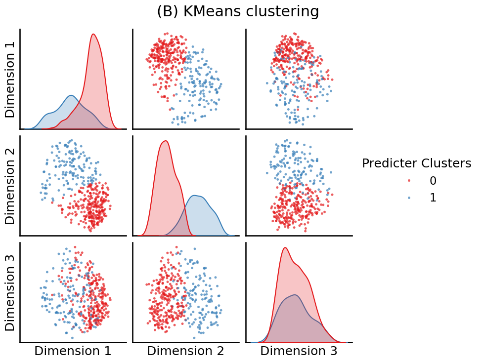
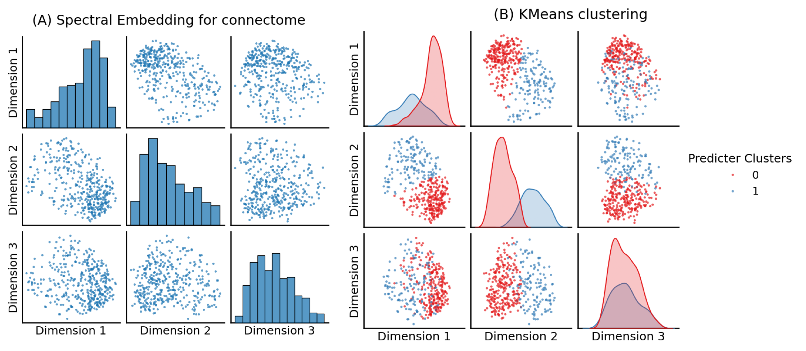
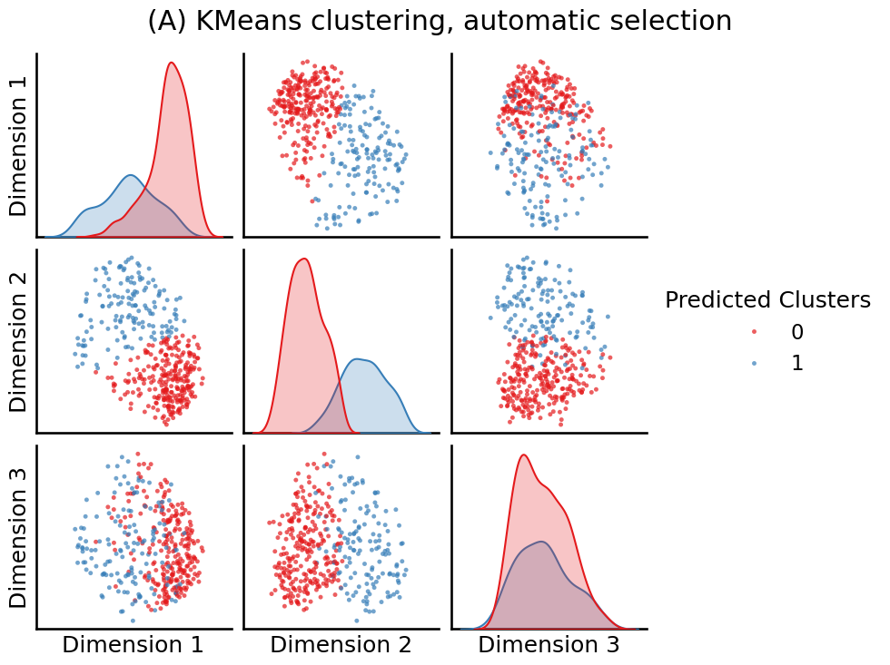

2.4 Select and Train#
mode = "svg" # output format for figs
import matplotlib
font = {'family' : 'Dejavu Sans',
'weight' : 'normal',
'size' : 20}
matplotlib.rc('font', **font)
import matplotlib
from matplotlib import pyplot as plt
import os
import urllib
import boto3
from botocore import UNSIGNED
from botocore.client import Config
from graspologic.utils import import_edgelist
import numpy as np
import glob
from tqdm import tqdm
# the AWS bucket the data is stored in
BUCKET_ROOT = "open-neurodata"
parcellation = "Schaefer400"
FMRI_PREFIX = "m2g/Functional/BNU1-11-12-20-m2g-func/Connectomes/" + parcellation + "_space-MNI152NLin6_res-2x2x2.nii.gz/"
FMRI_PATH = os.path.join("datasets", "fmri") # the output folder
DS_KEY = "abs_edgelist" # correlation matrices for the networks to exclude
def fetch_fmri_data(bucket=BUCKET_ROOT, fmri_prefix=FMRI_PREFIX,
output=FMRI_PATH, name=DS_KEY):
"""
A function to fetch fMRI connectomes from AWS S3.
"""
# check that output directory exists
if not os.path.isdir(FMRI_PATH):
os.makedirs(FMRI_PATH)
# start boto3 session anonymously
s3 = boto3.client('s3', config=Config(signature_version=UNSIGNED))
# obtain the filenames
bucket_conts = s3.list_objects(Bucket=bucket,
Prefix=fmri_prefix)["Contents"]
for s3_key in tqdm(bucket_conts):
# get the filename
s3_object = s3_key['Key']
# verify that we are grabbing the right file
if name not in s3_object:
op_fname = os.path.join(FMRI_PATH, str(s3_object.split('/')[-1]))
if not os.path.exists(op_fname):
s3.download_file(bucket, s3_object, op_fname)
def read_fmri_data(path=FMRI_PATH):
"""
A function which loads the connectomes as adjacency matrices.
"""
fnames = glob.glob(os.path.join(path, "*.csv"))
fnames.sort()
# import edgelists with graspologic
# edgelists will be all of the files that end in a csv
networks = [import_edgelist(fname) for fname in tqdm(fnames)]
return np.stack(networks, axis=0)
fetch_fmri_data()
As = read_fmri_data()
A = As[0]
0%| | 0/212 [00:00<?, ?it/s]
100%|██████████| 212/212 [00:00<00:00, 219391.18it/s]
0%| | 0/106 [00:00<?, ?it/s]
1%| | 1/106 [00:00<00:32, 3.21it/s]
2%|▏ | 2/106 [00:00<00:32, 3.20it/s]
3%|▎ | 3/106 [00:00<00:32, 3.21it/s]
4%|▍ | 4/106 [00:01<00:31, 3.21it/s]
5%|▍ | 5/106 [00:01<00:31, 3.21it/s]
6%|▌ | 6/106 [00:01<00:31, 3.20it/s]
7%|▋ | 7/106 [00:02<00:30, 3.20it/s]
8%|▊ | 8/106 [00:02<00:30, 3.22it/s]
8%|▊ | 9/106 [00:02<00:30, 3.20it/s]
9%|▉ | 10/106 [00:03<00:29, 3.22it/s]
10%|█ | 11/106 [00:03<00:29, 3.18it/s]
11%|█▏ | 12/106 [00:03<00:29, 3.19it/s]
12%|█▏ | 13/106 [00:04<00:28, 3.21it/s]
13%|█▎ | 14/106 [00:04<00:28, 3.24it/s]
14%|█▍ | 15/106 [00:04<00:27, 3.25it/s]
15%|█▌ | 16/106 [00:04<00:27, 3.22it/s]
16%|█▌ | 17/106 [00:05<00:27, 3.23it/s]
17%|█▋ | 18/106 [00:05<00:27, 3.22it/s]
18%|█▊ | 19/106 [00:05<00:27, 3.18it/s]
19%|█▉ | 20/106 [00:06<00:26, 3.20it/s]
20%|█▉ | 21/106 [00:06<00:26, 3.22it/s]
21%|██ | 22/106 [00:06<00:26, 3.16it/s]
22%|██▏ | 23/106 [00:07<00:26, 3.18it/s]
23%|██▎ | 24/106 [00:07<00:25, 3.20it/s]
24%|██▎ | 25/106 [00:07<00:25, 3.21it/s]
25%|██▍ | 26/106 [00:08<00:25, 3.20it/s]
25%|██▌ | 27/106 [00:08<00:24, 3.21it/s]
26%|██▋ | 28/106 [00:08<00:24, 3.21it/s]
27%|██▋ | 29/106 [00:09<00:24, 3.16it/s]
28%|██▊ | 30/106 [00:09<00:23, 3.18it/s]
29%|██▉ | 31/106 [00:09<00:23, 3.20it/s]
30%|███ | 32/106 [00:10<00:23, 3.14it/s]
31%|███ | 33/106 [00:10<00:22, 3.18it/s]
32%|███▏ | 34/106 [00:10<00:22, 3.20it/s]
33%|███▎ | 35/106 [00:10<00:22, 3.18it/s]
34%|███▍ | 36/106 [00:11<00:22, 3.18it/s]
35%|███▍ | 37/106 [00:11<00:21, 3.21it/s]
36%|███▌ | 38/106 [00:11<00:21, 3.22it/s]
37%|███▋ | 39/106 [00:12<00:21, 3.17it/s]
38%|███▊ | 40/106 [00:12<00:20, 3.20it/s]
39%|███▊ | 41/106 [00:12<00:20, 3.21it/s]
40%|███▉ | 42/106 [00:13<00:20, 3.14it/s]
41%|████ | 43/106 [00:13<00:19, 3.16it/s]
42%|████▏ | 44/106 [00:13<00:19, 3.20it/s]
42%|████▏ | 45/106 [00:14<00:19, 3.13it/s]
43%|████▎ | 46/106 [00:14<00:18, 3.16it/s]
44%|████▍ | 47/106 [00:14<00:18, 3.17it/s]
45%|████▌ | 48/106 [00:15<00:18, 3.18it/s]
46%|████▌ | 49/106 [00:15<00:18, 3.13it/s]
47%|████▋ | 50/106 [00:15<00:17, 3.16it/s]
48%|████▊ | 51/106 [00:15<00:17, 3.19it/s]
49%|████▉ | 52/106 [00:16<00:17, 3.13it/s]
50%|█████ | 53/106 [00:16<00:16, 3.17it/s]
51%|█████ | 54/106 [00:16<00:16, 3.20it/s]
52%|█████▏ | 55/106 [00:17<00:16, 3.14it/s]
53%|█████▎ | 56/106 [00:17<00:15, 3.18it/s]
54%|█████▍ | 57/106 [00:17<00:15, 3.19it/s]
55%|█████▍ | 58/106 [00:18<00:15, 3.14it/s]
56%|█████▌ | 59/106 [00:18<00:14, 3.15it/s]
57%|█████▋ | 60/106 [00:18<00:14, 3.16it/s]
58%|█████▊ | 61/106 [00:19<00:14, 3.18it/s]
58%|█████▊ | 62/106 [00:19<00:14, 3.12it/s]
59%|█████▉ | 63/106 [00:19<00:13, 3.15it/s]
60%|██████ | 64/106 [00:20<00:13, 3.16it/s]
61%|██████▏ | 65/106 [00:20<00:13, 3.09it/s]
62%|██████▏ | 66/106 [00:20<00:12, 3.10it/s]
63%|██████▎ | 67/106 [00:21<00:12, 3.13it/s]
64%|██████▍ | 68/106 [00:21<00:12, 3.06it/s]
65%|██████▌ | 69/106 [00:21<00:11, 3.10it/s]
66%|██████▌ | 70/106 [00:22<00:11, 3.13it/s]
67%|██████▋ | 71/106 [00:22<00:11, 3.09it/s]
68%|██████▊ | 72/106 [00:22<00:10, 3.14it/s]
69%|██████▉ | 73/106 [00:22<00:10, 3.16it/s]
70%|██████▉ | 74/106 [00:23<00:10, 3.18it/s]
71%|███████ | 75/106 [00:23<00:10, 3.10it/s]
72%|███████▏ | 76/106 [00:23<00:09, 3.15it/s]
73%|███████▎ | 77/106 [00:24<00:09, 3.17it/s]
74%|███████▎ | 78/106 [00:24<00:09, 3.11it/s]
75%|███████▍ | 79/106 [00:24<00:08, 3.12it/s]
75%|███████▌ | 80/106 [00:25<00:08, 3.17it/s]
76%|███████▋ | 81/106 [00:25<00:08, 3.08it/s]
77%|███████▋ | 82/106 [00:25<00:07, 3.14it/s]
78%|███████▊ | 83/106 [00:26<00:07, 3.18it/s]
79%|███████▉ | 84/106 [00:26<00:06, 3.21it/s]
80%|████████ | 85/106 [00:26<00:06, 3.12it/s]
81%|████████ | 86/106 [00:27<00:06, 3.15it/s]
82%|████████▏ | 87/106 [00:27<00:05, 3.20it/s]
83%|████████▎ | 88/106 [00:27<00:05, 3.10it/s]
84%|████████▍ | 89/106 [00:28<00:05, 3.13it/s]
85%|████████▍ | 90/106 [00:28<00:05, 3.17it/s]
86%|████████▌ | 91/106 [00:28<00:04, 3.07it/s]
87%|████████▋ | 92/106 [00:29<00:04, 3.12it/s]
88%|████████▊ | 93/106 [00:29<00:04, 3.15it/s]
89%|████████▊ | 94/106 [00:29<00:03, 3.06it/s]
90%|████████▉ | 95/106 [00:30<00:03, 3.10it/s]
91%|█████████ | 96/106 [00:30<00:03, 3.14it/s]
92%|█████████▏| 97/106 [00:30<00:02, 3.16it/s]
92%|█████████▏| 98/106 [00:30<00:02, 3.06it/s]
93%|█████████▎| 99/106 [00:31<00:02, 3.12it/s]
94%|█████████▍| 100/106 [00:31<00:01, 3.16it/s]
95%|█████████▌| 101/106 [00:31<00:01, 3.05it/s]
96%|█████████▌| 102/106 [00:32<00:01, 3.10it/s]
97%|█████████▋| 103/106 [00:32<00:00, 3.15it/s]
98%|█████████▊| 104/106 [00:32<00:00, 3.04it/s]
99%|█████████▉| 105/106 [00:33<00:00, 3.10it/s]
100%|██████████| 106/106 [00:33<00:00, 3.15it/s]
100%|██████████| 106/106 [00:33<00:00, 3.16it/s]
from sklearn.base import TransformerMixin, BaseEstimator
from sklearn.pipeline import Pipeline
from graspologic.utils import pass_to_ranks
def remove_isolates(A):
"""
A function which removes isolated nodes from the
adjacency matrix A.
"""
degree = A.sum(axis=0) # sum along the rows to obtain the node degree
out_degree = A.sum(axis=1)
A_purged = A[~(degree == 0),:]
A_purged = A_purged[:,~(degree == 0)]
print("Purging {:d} nodes...".format((degree == 0).sum()))
return A_purged
class CleanData(BaseEstimator, TransformerMixin):
def fit(self, X):
return self
def transform(self, X):
print("Cleaning data...")
Acleaned = remove_isolates(X)
A_abs_cl = np.abs(Acleaned)
self.A_ = A_abs_cl
return self.A_
class FeatureScaler(BaseEstimator, TransformerMixin):
def fit(self, X):
return self
def transform(self, X):
print("Scaling edge-weights...")
A_scaled = pass_to_ranks(X)
return (A_scaled)
num_pipeline = Pipeline([
('cleaner', CleanData()),
('scaler', FeatureScaler()),
])
A_xfm = num_pipeline.fit_transform(A)
Cleaning data...
Purging 0 nodes...
Scaling edge-weights...
from graspologic.embed import AdjacencySpectralEmbed
embedding = AdjacencySpectralEmbed(n_components=3, svd_seed=0).fit_transform(A_xfm)
from graspologic.plot import pairplot
from matplotlib import pyplot as plt
fig = pairplot(embedding, title="(A) Spectral Embedding for connectome")
fig.tight_layout()
fname = "pairplots0"
if mode != "png":
os.makedirs(f"Figures/{mode:s}", exist_ok=True)
fig.savefig(f"Figures/{mode:s}/{fname:s}.{mode:s}")
os.makedirs("Figures/png", exist_ok=True)
fig.savefig(f"Figures/png/{fname:s}.png")
/opt/hostedtoolcache/Python/3.12.9/x64/lib/python3.12/site-packages/seaborn/axisgrid.py:1513: UserWarning: Ignoring `palette` because no `hue` variable has been assigned.
func(x=vector, **plot_kwargs)
/opt/hostedtoolcache/Python/3.12.9/x64/lib/python3.12/site-packages/seaborn/axisgrid.py:1513: UserWarning: Ignoring `palette` because no `hue` variable has been assigned.
func(x=vector, **plot_kwargs)
/opt/hostedtoolcache/Python/3.12.9/x64/lib/python3.12/site-packages/seaborn/axisgrid.py:1513: UserWarning: Ignoring `palette` because no `hue` variable has been assigned.
func(x=vector, **plot_kwargs)
/opt/hostedtoolcache/Python/3.12.9/x64/lib/python3.12/site-packages/seaborn/axisgrid.py:1615: UserWarning: Ignoring `palette` because no `hue` variable has been assigned.
func(x=x, y=y, **kwargs)
/opt/hostedtoolcache/Python/3.12.9/x64/lib/python3.12/site-packages/seaborn/axisgrid.py:1615: UserWarning: Ignoring `palette` because no `hue` variable has been assigned.
func(x=x, y=y, **kwargs)
/opt/hostedtoolcache/Python/3.12.9/x64/lib/python3.12/site-packages/seaborn/axisgrid.py:1615: UserWarning: Ignoring `palette` because no `hue` variable has been assigned.
func(x=x, y=y, **kwargs)
/opt/hostedtoolcache/Python/3.12.9/x64/lib/python3.12/site-packages/seaborn/axisgrid.py:1615: UserWarning: Ignoring `palette` because no `hue` variable has been assigned.
func(x=x, y=y, **kwargs)
/opt/hostedtoolcache/Python/3.12.9/x64/lib/python3.12/site-packages/seaborn/axisgrid.py:1615: UserWarning: Ignoring `palette` because no `hue` variable has been assigned.
func(x=x, y=y, **kwargs)
/opt/hostedtoolcache/Python/3.12.9/x64/lib/python3.12/site-packages/seaborn/axisgrid.py:1615: UserWarning: Ignoring `palette` because no `hue` variable has been assigned.
func(x=x, y=y, **kwargs)
from sklearn.cluster import KMeans
labels = KMeans(n_clusters=2, random_state=0).fit_predict(embedding)
fig = pairplot(embedding, labels=labels, legend_name="Predicter Clusters",
title="(B) KMeans clustering")
fig.tight_layout()
fname = "pairplots1"
if mode != "png":
fig.savefig(f"Figures/{mode:s}/{fname:s}.{mode:s}")
fig.savefig(f"Figures/png/{fname:s}.png")

import matplotlib.image as mpimg
fig, axs = plt.subplots(1, 2, figsize=(20, 10), gridspec_kw={"width_ratios": [1, 1.39]})
axs[0].imshow(mpimg.imread('Figures/png/pairplots0.png'))
axs[1].imshow(mpimg.imread('Figures/png/pairplots1.png'))
# turn off x and y axis
[ax.set_axis_off() for ax in axs.ravel()];
fig.tight_layout()
fname = "pairplots"
if mode != "png":
fig.savefig(f"Figures/{mode:s}/{fname:s}.{mode:s}")
fig.savefig(f"Figures/png/{fname:s}.png")

from graspologic.cluster import KMeansCluster
labels = KMeansCluster(max_clusters=10, random_state=0).fit_predict(embedding)
fig = pairplot(embedding, labels=labels, title="(A) KMeans clustering, automatic selection",
legend_name="Predicted Clusters")
fig.tight_layout()
fname = "pairplot_impute0"
if mode != "png":
fig.savefig(f"Figures/{mode:s}/{fname:s}.{mode:s}")
fig.savefig(f"Figures/png/{fname:s}.png")

from graspologic.cluster import AutoGMMCluster
labels = AutoGMMCluster(max_components=10, random_state=0).fit_predict(embedding)
fig = pairplot(embedding, labels=labels, title="(B) AutoGMM Clustering, automatic selection",
legend_name="Predicted Clusters", palette=sns.color_palette("colorblind", 10))
fig.tight_layout()
fname = "pairplot_impute1"
if mode != "png":
fig.savefig(f"Figures/{mode:s}/{fname:s}.{mode:s}")
fig.savefig(f"Figures/png/{fname:s}.png")
---------------------------------------------------------------------------
NameError Traceback (most recent call last)
Cell In[10], line 5
1 from graspologic.cluster import AutoGMMCluster
3 labels = AutoGMMCluster(max_components=10, random_state=0).fit_predict(embedding)
4 fig = pairplot(embedding, labels=labels, title="(B) AutoGMM Clustering, automatic selection",
----> 5 legend_name="Predicted Clusters", palette=sns.color_palette("colorblind", 10))
7 fig.tight_layout()
9 fname = "pairplot_impute1"
NameError: name 'sns' is not defined
fig, axs = plt.subplots(1, 2, figsize=(20, 10), gridspec_kw={"width_ratios": [1, 1]})
axs[0].imshow(mpimg.imread('Figures/png/pairplot_impute0.png'))
axs[1].imshow(mpimg.imread('Figures/png/pairplot_impute1.png'))
# turn off x and y axis
[ax.set_axis_off() for ax in axs.ravel()]
fig.tight_layout()
fname = "pairplot_impute"
if mode != "png":
fig.savefig(f"Figures/{mode:s}/{fname:s}.{mode:s}")
fig.savefig(f"Figures/png/{fname:s}.png")